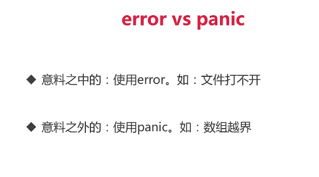
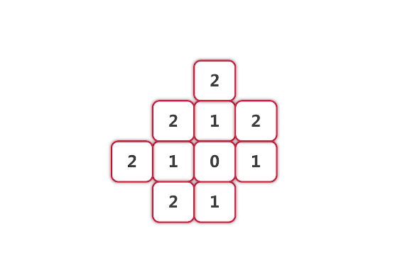

1.byte(4字节8位),rune(char类型,32位,4字节的int32)
2.强制类型转换,go没有隐式类型转换
1 | //勾股定理 |
3.iota
1 | const( |
4.指针
golang只有值传递一种方式
下面这种方式看着像引用传递,实际是复制了a的指针地址然后传递达到了引用传递的效果
5.Slice
- slice可以向后扩展,但无法向前扩展
- s[i]不可以超越len(s),向后扩展不能超过cap(s)
- 添加元素时如果超越cap,系统会重新分配更大的底层数组
1 | s := []int{0,1,2,3,4,5,6,7} |
6.Map
- 创建 make(map[string]string)
- 获取 m[key]
- key不存在时,获取的是零值
- value, ok :=m[key]判断值是否存在
- delete(m, “key”)删除
7.Rune(相当于go的char类型)
- 使用range遍历pos,rune对
- 使用utf8.RuneCountString()获取字符数量,而不是直接使用len()
- 使用len()只是获取到字节长度
- 使用[]byte获得字节
8.值接收者VS指针接收者
- 要改变内容必须使用指针接收者
- 结构体过大也考虑使用指针接收者
- 一致性:如有指针接收者,最好都是指针接收者
- 值接收者是go特有的
- 值/指针接收者均可以接收值/指针
9.接口
Type Assertion
.(type类型)获取interface肚子里的类型1
r.(*real.Retriver)
10.函数式编程

裴波纳契1
2
3
4
5
6
7
8
9
10
11
12
13
14
15func fibonacci() func() int {
a, b := 0, 1
return func() int {
a, b = b, a+b
return a
}
}
func main(){
f := fabonacci()
f() //1
f() //1
f() //2
f() //3
f() //5
}
11.资源管理

12.测试
1
2
3go test #测试当前目录
go test --coverprofile=c.out #生成c.out文件
go tool cover -html=c.out #将c.out文件生成html格式并用浏览器打开
1
2
3go test -bench . #benchmark测试
go test -bench . -cpuprofile=cpu.out
go tool pprof cpu.out
1
godoc -http :6060 #开启webservice文档
13.Goroutine
1
runtime.Gosched()//手动交出控制权
1 | go run -race main.go #race condition 数据访问冲突,进行错误检测 |
14.Channel
15.http
第一种1
2
3import _ "net/http/pprof"
//server func ...
//然后就可以通过url/debug/pprof进行访问
第二种1
2
3
4
5#会获得30秒的CPU使用率
go tool pprof http://localhost:8888/debug/pprof/profile
#会获得30秒的内存使用率
go tool pprof http://localhost:8888/debug/pprof/heap
#期间访问想要测试的http request,30秒后进入prof模式,可以使用web进行查看
16.广度优先算法
1.探索顺序:上左下右
2.结点的三种状态:
- 已经发现还未探索(最关键,这些未探索的点需要排队,不能急于探索必须轮到才能探索)
- 已经发现并且探索
- 连发现都没发现

一层一层往外递进,确保每到一个点都是用最短的路径到达
最终倒过来走就是最短路径
3.结束条件:
- 走到终端
- 队列为空(死路)